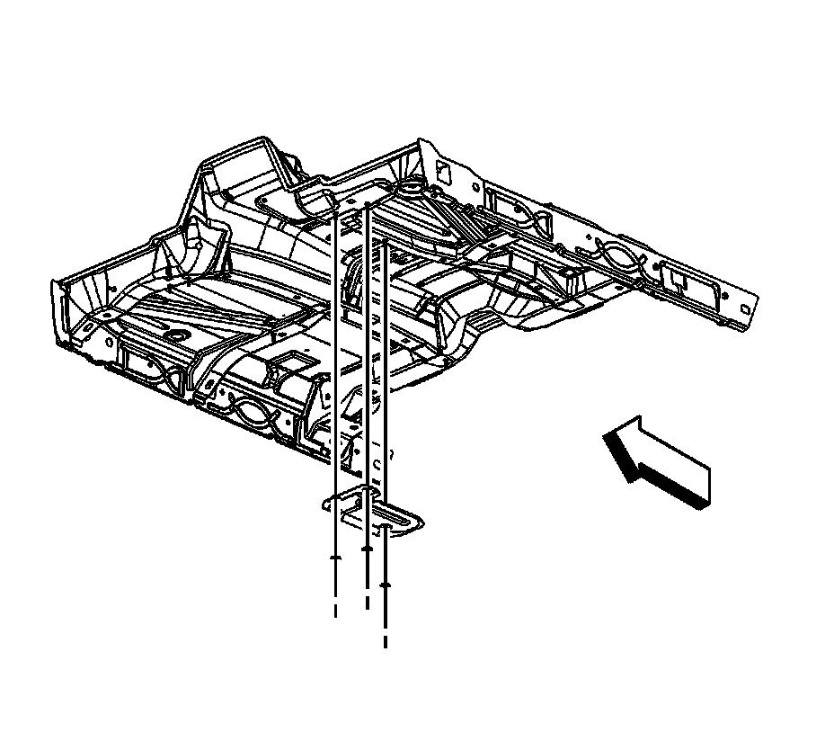
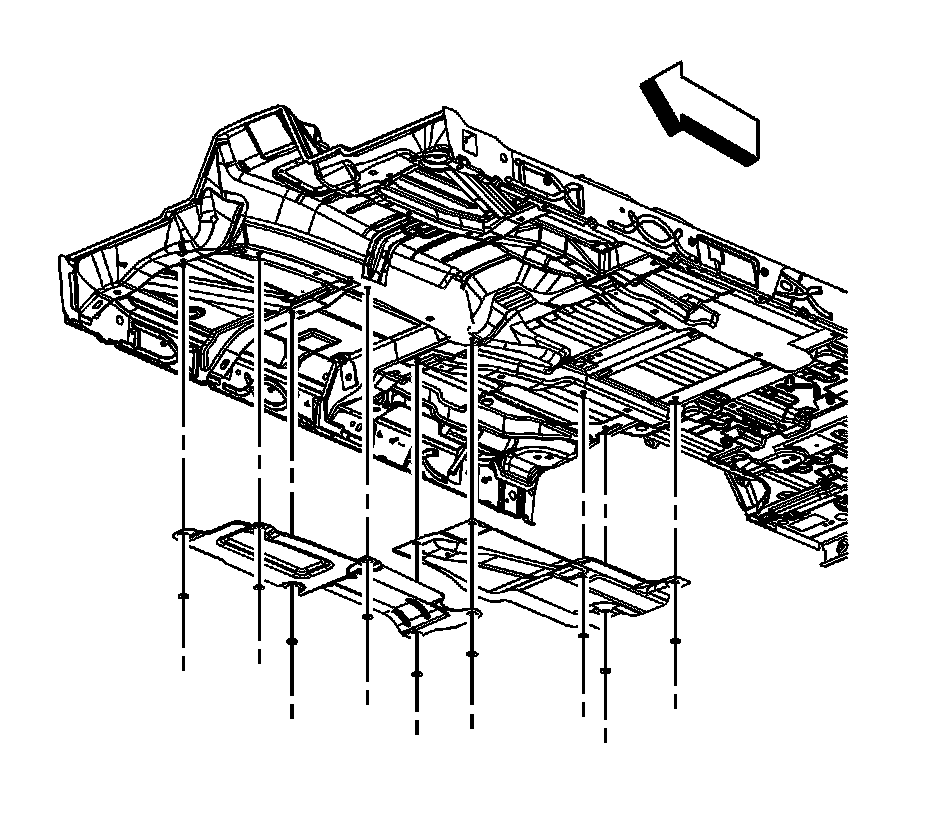
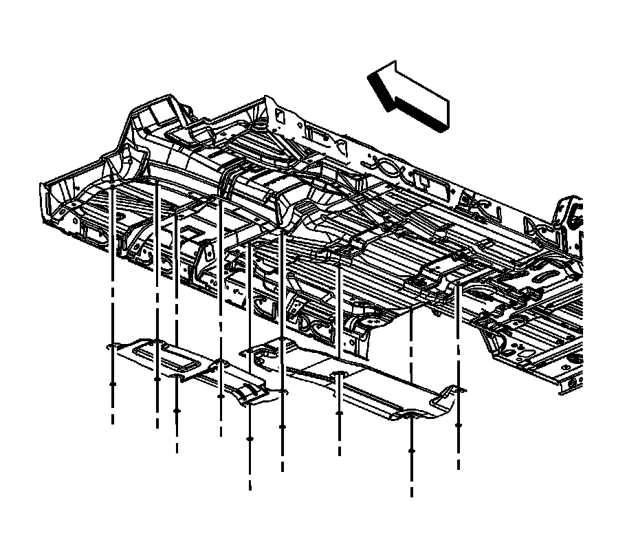
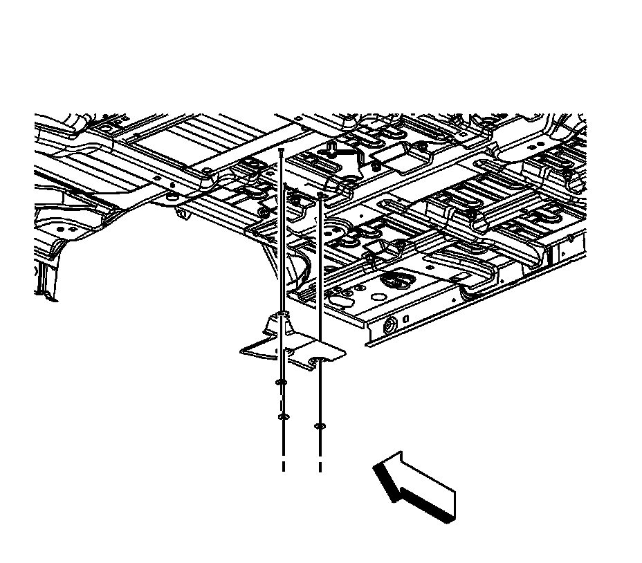

Floor Panel Heat Shield Replacement
Floor Panel Heat Shield Replacement
Removal Procedure

1. Remove the catalytic converter, as required. Refer to one of the following:
^ Catalytic Converter Replacement (1500 Series)
^ Catalytic Converter Replacement - Left Side (2500 Series)
^ Catalytic Converter Replacement - Right Side (2500 Series)
2. Remove the muffler assembly, as required.
3. Remove the left front floor panel exhaust heat shield nuts and heat shield, as required.

4. If the vehicle is a Tahoe, Yukon, Yukon Denali, or a Escalade, remove the exhaust heat shield nuts and heat shields, as required.

5. If the vehicle is a Suburban, Yukon XL, Yukon Denali XL, Escalade ESV, Escalade EXT or a Avalanche, remove the exhaust heat shield nuts and heat shields, as required.

6. Remove the rear floor panel exhaust heat shield nuts and heat shield, as required
Installation Procedure
Notice: Refer to Fastener Notice.
1. Position the rear floor panel exhaust heat shield to the studs and install the heat shield nuts.
Tighten the nuts to 9 N.m (80 lb in).
2. If the vehicle is a Suburban, Yukon XL, Yukon Denali XL, Escalade ESV, Escalade EXT or a Avalanche, position the exhaust heat shield to the studs and install the heat shield nuts, as required.
Tighten the nuts to 9 N.m (80 lb in).
3. If the vehicle is a Tahoe, Yukon, Yukon Denali, or a Escalade, position the exhaust heat shield to the studs and install the heat shield nuts, as required.
Tighten the nuts to 9 N.m (80 lb in).
4. Position the left front floor panel exhaust heat shield to the studs and install the heat shield nuts.
Tighten the nuts to 9 N.m (80 lb in).
5. Install the muffler assembly, as required.
6. Install the catalytic converter, if necessary. Refer to one of the following:
^ Catalytic Converter Replacement (1500 Series)
^ Catalytic Converter Replacement - Left Side (2500 Series)
^ Catalytic Converter Replacement - Right Side (2500 Series)